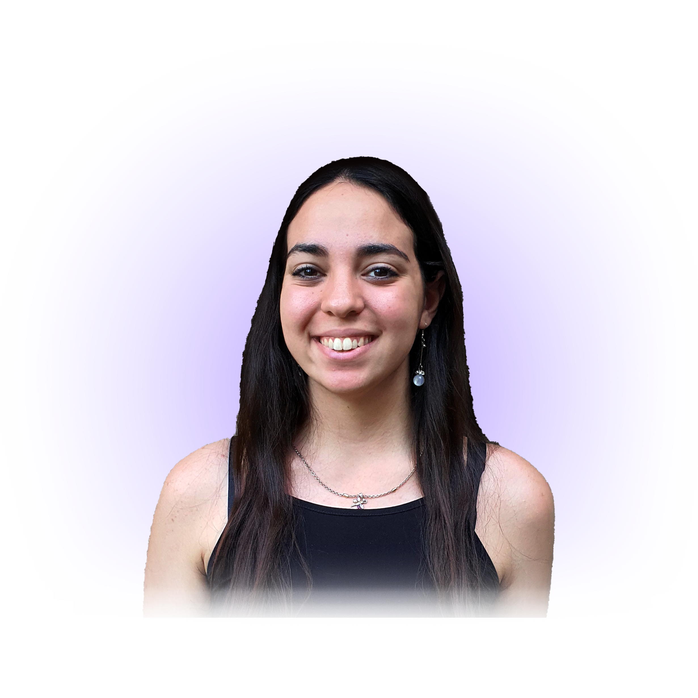

Hola!
Soy Ayelén Hassan, diseñadora gráfica con una trayectoria destacada en el mundo del diseño. He tenido el privilegio de colaborar con importantes marcas a nivel nacional e internacional, creando piezas gráficas para nombres reconocidos como Avia, Marvel, Goodyear, Stone y Club Atlético Vélez Sarsfield, entre otros.
En mi portafolio, te invito a explorar mi pasión por el diseño en sus diversas facetas, donde cada proyecto refleja mi dedicación y creatividad.